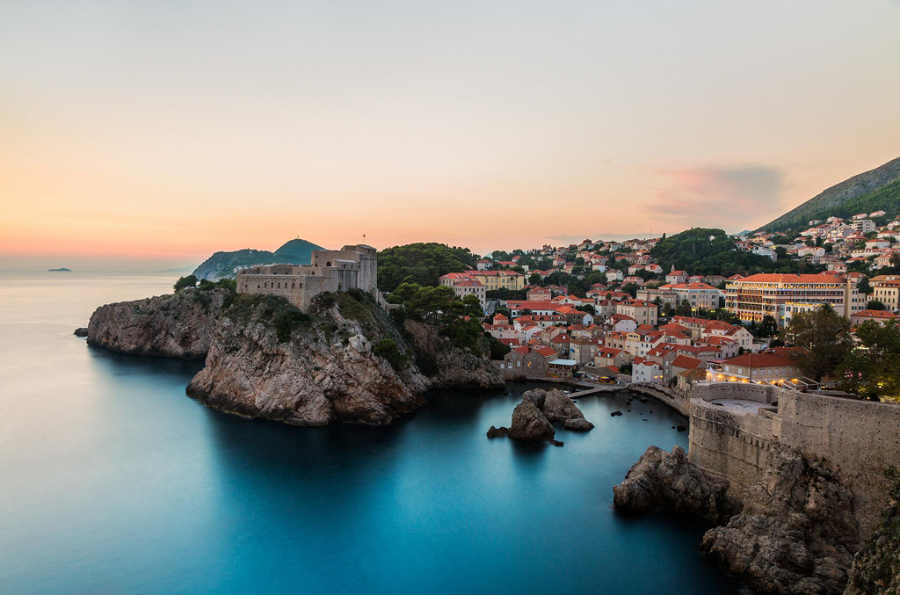
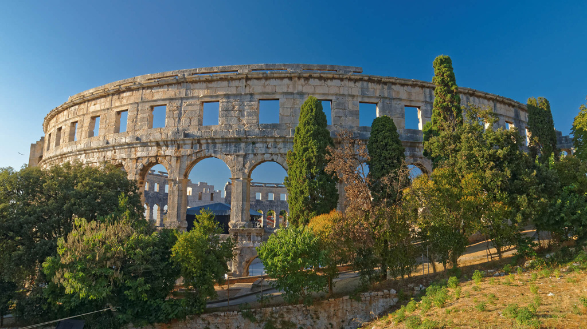
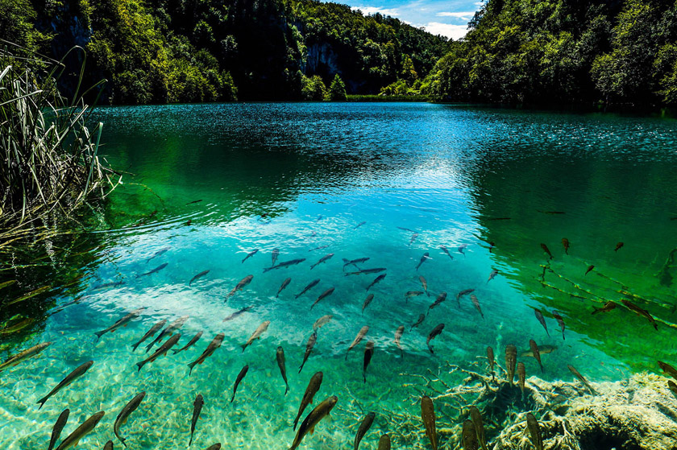

Хорватия достопримечательности
Хорватия — страна не очень большая. Расположилась она в северной части Балканского полуострова, который считается одним из самых экологически не загрязненных мест в мире.В этой прекрасной стране каждый сможет найти, чем ему заняться: любители понежиться на пляже, фанаты истории, гурманы и многие другие — всем найдется место по душе.Хорватия — это отличный выбор для тех, кто хочет дать отдохнуть не только телу, но и душе. Здесь это можно легко воплотить в жизнь, ведь в любом уголке этой страны чувствуется баланс, гармония, красота и размеренность. Именно этими качествами страна покоряет сердца и заставляет туристов возвращаться сюда снова и снова.Здесь находится более двадцати источников, которые прославлены на всю планету своими целебными свойствами.Страну можно разделить на континентальную и побережную части, а в самом море находится множество небольших островов, которые пользуются большой популярностью у отдыхающих.
Эти земли заселены людьми еще с эпохи неолита, что говорит о том, что здесь очень богатое культурное наследие. Кроме того, в Хорватии оно может быть богаче, чем где-либо, и страна обязана этому факту своей историей. Еще в самой древности она, как бы, находилась на границе культур. Сначала здесь была границу между восточной и западной часть Римской империи, позже, граница между Византией и франками, еще позже — между двумя религиями — христианством и исламом. Все эти факторы привели к тому, что в Хорватии собраны уникальные памятники архитектуры, искусства, да и культуры в целом.
Если говорить о климате в стране, то он здесь достаточно мягкий, что характерно для этих мест. Около моря температура летом +25-29 градусов, воздух сухой и жаркий, зимой тут также не холодно, температура воздуха около +9-13 градусов. Чем дальше от моря, тем прохладнее становится средняя температура как летом (+20-23), так и зимой (+1-3). Купаться смело здесь можно, не боясь замерзнуть, с начала мая и аж до середины октября.
Официальный язык в стране — хорватский, однако в туристических районах можно услышать немецкую, итальянскую и английскую речь. В связи с развитием туризма и возвращению из Германии наемных рабочих, немецкий язык стал в стране практически вторым. Английский же язык более популярен среди молодежи.
Дубровник
Дубровник представляет собой старинный город в южной части страны. Город настолько интересен туристам, что его называют “музей под открытым небом”. Здесь можно найти много архитектурных памятников эпохи Возрождения. Более того, Дубровник — это еще немаленький порт, а также отличный курорт. Кроме того, здесь проходит очень много культурных событий и мероприятий, например тут можно побывать на, Международном кинофестивале, Летнем фестивале, Фестивале современного исполнительского искусства и других.
Как говорилось выше — здесь очень много памятников архитектуры, которым стоит обратить внимание, кроме того, Дубровник очень популярен своими церквями. Главная церковь города — Собор Вознесения Девы Марии, которые выстроен в барочном стиле. Кроме того, здесь очень много ярких представителе готического стиля. Большая часть храмов здесь по совместительству выполняют роль музеев.
Посмотреть на красивейший город можно с древних крепостных стен, которые стоят здесь с XV века. Со стен открывается завораживающая панорама: виден порт, море и исторический центр города.Очень хорошим местом для того, чтобы неспешно прогуляться, станет главная улица города — Страдун. На ней расположены главные архитектурные памятники. Улица начинается и заканчивается прекрасными фонтанами, которые украшают город начиная с XV века.
Город считается одним из самых посещаемых курортов во всей стране, поэтому тут очень развита туристическая инфраструктура, много отелей и пляжей. Пляжи тут, по большей части, покрыты галькой, однако море чистое, а пляжи благоустроены: на них можно найти множество кафе и мест для проведения досуга.
Млет
В хорватской Далмации находятся четыре острова и Млет — самый дикий из них. Получилось так потому, что здесь почти нет отелей. Один есть, конечно, но особо на количество людей.Млет — очень гористый остров, почти полностью покрытый лесами. Здесь очень мало долин, на некоторых выращивают виноград, но это не всегда удается, так как его подъедают местные кабаны, которых привезли сюда для разноображивания фауны.Вдоль острова проходит дорога, если съезжать с нее, можно натыкаться на небольшие деревеньки. Море здесь чистое и красивое. Пляжей с лежаками тут нет, так что если хочется поплавать в уединении, наслаждаясь тишиной и спокойствием — вам сюда.
Лучше всего останавливаться на северном побережье острова, там не ветрено, так как от ветра защищают острова впереди. Здесь можно найти песчаные пляжи. Сюда часто приезжают семьи с детьми.
Амфитеатр Пулы
Пульский амфитеатр — символ хорватского региона Истрия. Сооружение стоит здесь еще со времен правления Августа, то есть I века, в те дни, когда Пула еще являлась стратегически важным пунктом Рима.У амфитеатра есть особенности, которые делают его уникальным. От сооружений подобного типа Амфитеатр в Пуле отличается тем, что внешние стены здесь укрепляются четырьмя башнями, которые имеют прямоугольную форму. Внутри этих баже распо лагаются лестницы, ведущие на самый верх. На верхушке каждой из башен есть места для сбора дождевой воды. Таким образом, башни несут не только укрепляющий характер, а также представляют из себя своеобразные водохранилища.В свое время это сооружение, как и аналогичные, использовалось для боев гладиаторов, а также битв с дикими зверями. Войти сюда можно было ничего не заплатив, однако место в “зале” распределялось строго с учетом положения в обществе каждого отдельного человека.
Когда бои гладиаторов были запрещены, амфитеатр быстро пришел в запустение, какое-то время здесь даже пасли скот. Хотя также он был очень популярен во все времена среди местной богемы.Еще в XVIII столетии началась реставрация этого архитектурного памятника и продолжается она в наши дни.Также здесь сезонно проводятся различные мероприятия и концерты.
Плитвицкие озера
Плитвицкие озера представляют собой национальный парк, который расположился в самом центре страны.Национальный парк полон прекрасных водопадов и плотин, озер и пещер, которые долгие века формировались естественным путем.
С конца 70-х годов парк включен в Список Всемирного наследия ЮНЕСКО.Площадь парка — 29,5 гектаров, а местная флора, притягивает к себе туристов со всего мира. Из представителей фауны здесь можно встретить лесных котов, косуль, и множество редких видов птиц.
В долине здесь постоянно появляются новые водопады: скалы из известняка делают водоемы полными кальцита, из-за которого растения, попавшие в воду, превращаются в твердые отложения. Тропы для туристов здесь расположены вдоль самых интересных и красивых мест парка: здесь можно прогуляться по деревянному настилу, переправиться через водоем на пароме, прогулочном катере или просто автобусе. Все это занимает около восьми часов, но при этом оставляет после себя множество положительных эмоций и множество впечатлений.
